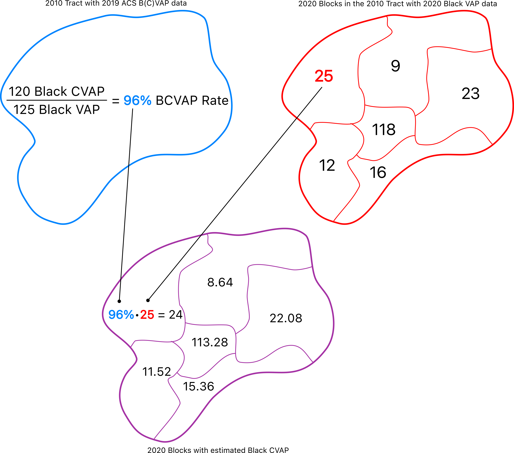

Module gerrytools.data
Facilities for processing data and districting plans in a standardized fashion.
Expand source code
"""
Facilities for processing data and districting plans in a standardized fashion.
"""
from .acs import cvap, acs5
from .census import census20, census10, variables
from .estimatecvap import estimatecvap2010, estimatecvap2020, fetchgeometries
from .fetch import submissions, tabularized, Submission
from .remap import remap
from .URLs import ids, one, csvs
from .AssignmentCompressor import AssignmentCompressor
__all__ = [
"submissions",
"tabularized",
"remap",
"ids",
"one",
"csvs",
"AssignmentCompressor",
"Submission",
"cvap",
"acs5",
"census20",
"variables",
"estimatecvap2010",
"estimatecvap2020",
"fetchgeometries",
"census10"
]Sub-modules
gerrytools.data.URLsgerrytools.data.acsgerrytools.data.censusgerrytools.data.estimatecvapgerrytools.data.fetch
Functions
def acs5(state, geometry='tract', year=2020, columns=[], white='NHWHITEVAP') ‑> pandas.core.frame.DataFrame-
Retrieves ACS 5-year population estimates for the provided state, geometry level, and year. Also retrieves ACS-reported CVAP data, which closely matches that reported by the CVAP special tabulation; CVAP data are only returned at the tract level, and are otherwise reported as 0.
Args
state:us.StateStateobject for the desired state.geometry:str, optional- Geometry level at which data is retrieved.
Acceptable values are
"tract"and"block group". Defaults to"tract", so data is retrieved at the 2020 Census tract level. year:int, optional- Year for which data is retrieved. Defaults to 2020.
columns:list, optional- Columns to retrieve. If
None, a default set of columns including total populations by race and ethnicity and voting-age populations by race and ethnicity are returned, along with a GEOID column. white:str, optional- The column removed from totals when calculating POC populations.
Returns
A DataFrame containing the formatted data.
Expand source code
def acs5(state, geometry="tract", year=2020, columns=[], white="NHWHITEVAP") -> pd.DataFrame: """ Retrieves ACS 5-year population estimates for the provided state, geometry level, and year. Also retrieves ACS-reported CVAP data, which closely matches that reported by the CVAP special tabulation; CVAP data are only returned at the tract level, and are otherwise reported as 0. Args: state (us.State): `State` object for the desired state. geometry (str, optional): Geometry level at which data is retrieved. Acceptable values are `"tract"` and `"block group"`. Defaults to `"tract"`, so data is retrieved at the 2020 Census tract level. year (int, optional): Year for which data is retrieved. Defaults to 2020. columns (list, optional): Columns to retrieve. If `None`, a default set of columns including total populations by race and ethnicity and voting-age populations by race and ethnicity are returned, along with a GEOID column. white (str, optional): The column removed from totals when calculating POC populations. Returns: A DataFrame containing the formatted data. """ # Columns for total populations. yearsuffix = str(year)[-2:] popcolumns = { "B01001_001E": "TOTPOP" + yearsuffix, "B03002_003E": "WHITE" + yearsuffix, "B03002_004E": "BLACK" + yearsuffix, "B03002_005E": "AMIN" + yearsuffix, "B03002_006E": "ASIAN" + yearsuffix, "B03002_007E": "NHPI" + yearsuffix, "B03002_008E": "OTH" + yearsuffix, "B03002_009E": "2MORE" + yearsuffix, "B03002_002E": "NHISP" + yearsuffix, } # Create a dictionary of column groups. groups = {} # Get VAP columns. The columns listed here are by race, irrespective of ethnicity; # for example, WVAP19 is the group of people who identified White as their *only* # race, including people who identified as Hispanic and White. vapnames = [ "WHITEVAP", "BLACKVAP", "AMINVAP", "ASIANVAP", "NHPIVAP", "OTHVAP", "2MOREVAP", "NHWHITEVAP", "HVAP" ] vaptables = list(zip( [column + yearsuffix for column in vapnames], ["A", "B", "C", "D", "E", "F", "G", "H", "I"] )) groups.update({ column: _variables(f"B01001{table}", 7, 16) + _variables(f"B01001{table}", 22, 31) for column, table in vaptables }) # Get CVAP columns; the same goes for these columns as does the above, except # these columns are 18 years and older *and* citizens. cvapnames = [ "WHITECVAP", "BLACKCVAP", "AMINCVAP", "ASIANCVAP", "NHPICVAP", "OTHCVAP", "2MORECVAP", "NHWHITECVAP", "HCVAP" ] cvaptables = list(zip( [name + yearsuffix for name in cvapnames], ["A", "B", "C", "D", "E", "F", "G", "H", "I"] )) groups.update({ column: _variables(f"B05003{table}", 9, 9) + _variables(f"B05003{table}", 11, 11) + # men _variables(f"B05003{table}", 20, 20) + _variables(f"B05003{table}", 22, 22) # women for column, table in cvaptables }) # Get all voting-age people and citizen voting-age people. groups["VAP" + yearsuffix] = _variables("B01001", 7, 25) + _variables("B01001", 31, 49) groups["CVAP" + yearsuffix] = _variables("B05003", 9, 9) + \ _variables("B05003", 11, 11) + \ _variables("B05003", 20, 20) + \ _variables("B05003", 22, 22) # TODO: all variables used across the data submodule should be packaged up # as a class, so we can access individual dictionaries of variables to add. # For example, we should have a `Variables.acs5.vap` property which gives us # the voting-age population variables for the ACS 5-year estimates. # Get the list of all columns. allcols = list(popcolumns.keys()) + [c for k in groups.values() for c in k] + columns # Retrieve the data from the Census API. data = censusdata.download( "acs5", year, censusdata.censusgeo( [("state", str(state.fips).zfill(2)), ("county", "*"), (geometry, "*")] ), ["GEO_ID"] + allcols ) # Rework columns. data = data.reset_index(drop=True) data["GEO_ID"] = data["GEO_ID"].str.split("US").str[1] data = data.rename({"GEO_ID": geometry.replace(" ", "").upper() + ("10" if year < 2020 else "20")}, axis=1) data = data.rename(popcolumns, axis=1) # Collapse column groups. for column, group in groups.items(): data[column] = data[group].sum(axis=1) data = data.drop(group, axis=1) # Create a POCVAP column. data["POCVAP" + yearsuffix] = data["VAP" + yearsuffix] - data[white + yearsuffix] return data def census10(state, columns={}, geometry='block')-
Retrieves
geometry-level 2010 Summary File 1 data via the Census API.Args
state:Stateus.Stateobject (e.g.us.states.WI).columns:dict, optional- Dictionary which maps Census column names (from the correct table) to human-readable names. We require this to be a dictionary, not a list, as specifying human-readable names will implicitly protect against incorrect column names and excessive API calls.
geometry:string, optional- Geometry level at which we retrieve data.
Defaults to
"block"to retrieve block-level data for the state provided. Accepted values are"block","block group", and"tract".
Returns
A DataFrame with columns renamed according to their Census description designation and a unique identifier column for joining to geometries.
Expand source code
def census10(state, columns={}, geometry="block"): """ Retrieves `geometry`-level 2010 Summary File 1 data via the Census API. Args: state (State): `us.State` object (e.g. `us.states.WI`). columns (dict, optional): Dictionary which maps Census column names (from the correct table) to human-readable names. We require this to be a dictionary, _not_ a list, as specifying human-readable names will implicitly protect against incorrect column names and excessive API calls. geometry (string, optional): Geometry level at which we retrieve data. Defaults to `"block"` to retrieve block-level data for the state provided. Accepted values are `"block"`, `"block group`", and `"tract"`. Returns: A DataFrame with columns renamed according to their Census description designation and a unique identifier column for joining to geometries. """ # Create the right geometry identifiers. geometries = [("state", str(state.fips)), ("county", "*"), ("tract", "*")] if geometry in {"block group", "block"}: geometries += [(geometry, "*")] # Create an identifier column. identifier = geometry.replace(" ", "").upper() + "10" # Download data. raw = censusdata.download( "sf1", 2010, censusdata.censusgeo(geometries), ["GEO_ID"] + list(columns.keys()), ) # Rename columns and send back to the caller! raw = raw.rename({"GEO_ID": identifier, **columns}, axis=1) raw[identifier] = raw[identifier].str[9:] clean = raw.reset_index(drop=True) return clean def census20(state, table='P1', columns={}, geometry='block', key='75c0c07e6f0ab7b0a9a1c14c3d8af9d9f13b3d65') ‑> pandas.core.frame.DataFrame-
Retrieves
geometry-level 2020 Decennial Census PL94-171 data via the Census API.Args
state:Stateus.Stateobject (e.g.us.states.WI).table:string, optional- Table from which we retrieve data. Defaults to the P1 table, which gets populations by race regardless of ethnicity.
columns:dict, optional- Dictionary which maps Census column names (from the correct table) to human-readable names. We require this to be a dictionary, not a list, as specifying human-readable names will implicitly protect against incorrect column names and excessive API calls.
geometry:string, optional- Geometry level at which we retrieve data.
Defaults to
"block"to retrieve block-level data for the state provided. Accepted values are"block","block group", and"tract". key:string, optional- Census API key.
Returns
A DataFrame with columns renamed according to their Census description designation and a
GEOID20column for joining to geometries.Expand source code
def census20( state, table="P1", columns={}, geometry="block", key="75c0c07e6f0ab7b0a9a1c14c3d8af9d9f13b3d65" ) -> pd.DataFrame: """ Retrieves `geometry`-level 2020 Decennial Census PL94-171 data via the Census API. Args: state (State): `us.State` object (e.g. `us.states.WI`). table (string, optional): Table from which we retrieve data. Defaults to the P1 table, which gets populations by race regardless of ethnicity. columns (dict, optional): Dictionary which maps Census column names (from the correct table) to human-readable names. We require this to be a dictionary, _not_ a list, as specifying human-readable names will implicitly protect against incorrect column names and excessive API calls. geometry (string, optional): Geometry level at which we retrieve data. Defaults to `"block"` to retrieve block-level data for the state provided. Accepted values are `"block"`, `"block group`", and `"tract"`. key (string, optional): Census API key. Returns: A DataFrame with columns renamed according to their Census description designation and a `GEOID20` column for joining to geometries. """ # Check whether the geometry is right. If not, warn the user and set it # properly. if geometry not in {"block", "tract", "block group"}: print(f"Geometry \"{geometry}\" not accepted; defaulting to \"block\".") geometry = "block" # Check whether we're providing an appropriate table name. if table not in {"P1", "P2", "P3", "P4"}: print(f"Table \"{table}\" not accepted; defaulting to \"P1.\"") table = "P1" # Set the base Census API URL and get the keys for the provided table. base = "https://api.census.gov/data/2020/dec/pl" varmap = columns if columns else variables(table) vars = list(varmap.keys()) # Create the end part of the query string. q = [ ("key", key), ("for", f"{geometry.replace(' ', r'%20')}:*"), ("in", f"state:{str(state.fips).zfill(2)}"), ("in", "county:*"), ] # Based on the geometry type, add an additional entry; this is required to # match the Census geographic hierarchy. if geometry in {"block", "block group"}: q.append(("in", "tract:*")) # Now, since the Census doesn't allow us to request more than 50 variables # at once, we request things in two parts and then merge them together. mergeable = [] # Split up start and stop positions based on the number of variables. if len(vars) < 45: positions = [(0, len(vars))] else: positions = [(0, 45), (45, len(vars))] for start, stop in positions: # Get the chunk of variables and create a tail of columns (geographic # identifiers). varchunk = vars[start:stop] last = [geometry] if geometry in {"block group", "block"} else [] tail = ["state", "county", "tract"] + last # Create an unescaped query string. unescaped = q.copy() unescaped.append(("get", ",".join(varchunk))) # Create an escaped query string from the previous. escaped = "?" + "&".join( f"{param}={value}" for param, value in unescaped ) # Send the request and create a dataframe. req = requests.get(base + escaped).json() header, data = req[0], req[1:] chunk = pd.DataFrame(data, columns=header) # Get a GEOID column and drop old columns. chunk["GEOID20"] = _rjoin(chunk[tail], tail) chunk = chunk.drop(tail, axis=1) mergeable.append(chunk) # Merge the dataframes, rename everything, make the columns ints, and return. merged = reduce(lambda l, r: pd.merge(l, r, on="GEOID20"), mergeable) merged = merged.rename(varmap, axis=1) merged = merged.astype({var: int for var in varmap.values()}) # Make the GEOID20 column the first column. merged = merged[["GEOID20"] + list(varmap.values())] return merged def csvs(state, ptype='plan')-
URL for accessing districtr plan metadata.
Args
stateus.Statesobject (e.g.us.states.WI)ptype- Type of plan we're retrieving; defaults to
"plan".
Returns
String with the appropriate URL.
Expand source code
def csvs(state, ptype="plan"): """ URL for accessing districtr plan metadata. Args: state: `us.States` object (e.g. `us.states.WI`) ptype: Type of plan we're retrieving; defaults to `"plan"`. Returns: String with the appropriate URL. """ pipeline = "beta" if state == us.states.MI else "prod" if state == us.states.MI: prefix = "https://o1siz7rw0c.execute-api.us-east-2.amazonaws.com" else: prefix = "https://k61e3cz2ni.execute-api.us-east-2.amazonaws.com" suffix = f"?type={ptype}&length=10000" return f"{prefix}/{pipeline}/submissions/csv/{state.name.lower()}{suffix}" def cvap(state, geometry='tract', year=2020) ‑> pandas.core.frame.DataFrame-
Retrieves and CSV-formats 5-year CVAP data for the provided state at the specified geometry level. Geometries from the 2010 Census. Variables and descriptions are listed here.
Args
state:us.State- The
Stateobject for which we're retrieving 2019 ACS CVAP Special Tab. geometry:str, optional- Level of geometry for which we're getting data.
Accepted values are
"block group"for 2010 Census Block Groups, and"tract"for 2010 Census Tracts. Defaults to"tract". year:int, optional- Year for which data is retrieved. Defaults to 2020.
Returns A
DataFramewith aGEOIDcolumn and corresponding CVAP columns from the ACS CVAP Special Tab for the specified year.Expand source code
def cvap(state, geometry="tract", year=2020) -> pd.DataFrame: """ Retrieves and CSV-formats 5-year CVAP data for the provided state at the specified geometry level. Geometries from the **2010 Census**. Variables and descriptions are [listed here](https://tinyurl.com/3mnrm56s). Args: state (us.State): The `State` object for which we're retrieving 2019 ACS CVAP Special Tab. geometry (str, optional): Level of geometry for which we're getting data. Accepted values are `"block group"` for 2010 Census Block Groups, and `"tract"` for 2010 Census Tracts. Defaults to `"tract"`. year (int, optional): Year for which data is retrieved. Defaults to 2020. Returns A `DataFrame` with a `GEOID` column and corresponding CVAP columns from the ACS CVAP Special Tab for the specified year. """ # Maps line numbers to descriptors. descriptions = { 1: "CVAP", 2: "NHCVAP", 3: "NHAMINCVAP", 4: "NHASIANCVAP", 5: "NHBLACKCVAP", 6: "NHNHPICVAP", 7: "NHWHITECVAP", 8: "NHWHITEAMINCVAP", 9: "NHWHITEASIANCVAP", 10: "NHWHITEBLACKCVAP", 11: "NHBLACKAMINCVAP", 12: "NHOTHCVAP", 13: "HCVAP" } # First, load the raw data requested; allowed geometry values are "block group" # and "tract." if geometry not in {"block group", "tract"}: print(f"Requested geometry \"{geometry}\" is not allowed; loading tracts.") geometry = "tract" abbrv = geometry if geometry == "tract" else "block group" # Load the raw data. raw = _raw(abbrv, year) # Create a STATE column for filtering and remove all rows which don't match # the state FIPS code. raw["GEOID"] = raw["geoid"].str.split("US").str[1] raw["STATE"] = raw["GEOID"].str[:2] instate = raw[raw["STATE"] == str(state.fips)] # Now that we have the in-state data, we aim to pivot the table. Because the # ACS data is in a line-numbered format (i.e. each chunk of 13 lines matches # to an individual geometry, and each of the 13 lines describes an individual # statistic) we need to first collapse each chunk of 13 lines, then build a # dataframe from the resulting collapsed lines. First we send the dataframe # to a list of records. instate_records = instate.to_dict(orient="records") collapsed = [] # Get year stuff. decade = "10" if year < 2020 else "20" yearsuffix = str(year)[2:] # Next, we collapse these records to a single record. for i in range(0, len(instate_records), 13): # Create an empty records. record = {} # For each of the records in the block, "collapse" them into a single # record. block = instate_records[i:i + 13] for line in block: record[geometry.replace(" ", "").upper() + decade] = line["GEOID"] record[descriptions[line["lnnumber"]] + yearsuffix] = line["cvap_est"] record[descriptions[line["lnnumber"]] + f"{yearsuffix}e"] = line["cvap_moe"] collapsed.append(record) # Create a dataframe and a POCCVAP column; all people minus non-Hispanic # White. data = pd.DataFrame().from_records(collapsed) data[f"POCCVAP{yearsuffix}"] = data[f"CVAP{yearsuffix}"] - data[f"NHWHITECVAP{yearsuffix}"] return data def estimatecvap2010(base, state, groups, ceiling, zfill, geometry10='tract', year=2019) ‑> pandas.core.frame.DataFrame-
Function for turning old (2019) CVAP data on 2010 geometries into estimates for current CVAP data on 2020 geometries. This method serves a different purpose than
estimatecvap2020(): this method is intended to put 2010-era CVAP data on 2020-era geometries, and uses geometric properties to do so.Users must supply a base
GeoDataFramerepresenting their chosen U.S. state. Additionally, users must specify the demographic groups whose CVAP statistics are to be estimated. For each group, users specify a triple (X, Y, Z) where X is the old CVAP column for that group, Y is the old VAP column for that group, and Z is the new VAP column for that group, which must be an existing column onbase. Then, the estimated new CVAP for that group will be constructed by multiplying (X / Y) \cdot Z for each new geometry.Args
base:GeoDataFrame- A
GeoDataFramewith the appropriate columns for estimating CVAP. state:State- The
us.Stateobject for which CVAP data is retrieved. groups:list(X, Y, Z)triples for each desired CVAP group to be estimated, where each of the parameters are column names:Xis the column on the 2010 geometries which contains the relevant CVAP data;Yis the column on the 2010 geometries which contains the relevant VAP data;Zis the column on the 2020 geometries to be weighted by the ratio of the per-unit ratios inXandY. For example, if we wish to estimate Black CVAP, this triple would be(NHBCVAP19, BVAP19, BVAP20), which takes the ratios of theNHBCVAP19andBVAP19columns on the 2010 geometries, and multplies the 2020 geometries' respectiveBVAP20values by these ratios.ceiling:float- Number representing where to cap the weighting ratio of CVAP to VAP20. After this percentage ceiling is passed, the percentage will be set to 1. We recommend setting this to 1.
zfill:float- Fill in ratio for CVAP to VAP20 when there is 0 CVAP in the
area. We recommend setting this parameter to
0.1. geometry10:str, optional- The 2010 geometry on which cvap will be pulled.
Acceptable values are
"tract"or"block group". As tracts are less susceptible to change across Census vintages, setting this parameter to"tract"is recommended, as it is more likely that the 2020 Census blocks fit neatly into the 2010 Census tracts.
Returns
basegeometries with 2019 CVAP-weighted 2020 CVAP estimates attached.Expand source code
def estimatecvap2010( base, state, groups, ceiling, zfill, geometry10="tract", year=2019 ) -> DataFrame: r""" Function for turning old (2019) CVAP data on 2010 geometries into estimates for current CVAP data on 2020 geometries. **This method serves a different purpose than `gerrytools.data.estimatecvap.estimatecvap2020()`:** this method is intended to put 2010-era CVAP data on 2020-era geometries, and uses geometric properties to do so. Users must supply a base `GeoDataFrame` representing their chosen U.S. state. Additionally, users must specify the demographic groups whose CVAP statistics are to be estimated. For each group, users specify a triple \((X, Y, Z)\) where \(X\) is the old CVAP column for that group, \(Y\) is the old VAP column for that group, and \(Z\) is the new VAP column for that group, which must be an existing column on `base`. Then, the estimated new CVAP for that group will be constructed by multiplying \((X / Y) \cdot Z\) for each new geometry. <div style="text-align: center;"> </br> <img width="75%" src="../images/cvap-estimation.png"/> </div> Args: base (GeoDataFrame): A `GeoDataFrame` with the appropriate columns for estimating CVAP. state (State): The `us.State` object for which CVAP data is retrieved. groups (list): `(X, Y, Z)` triples for each desired CVAP group to be estimated, where each of the parameters are column names: `X` is the column on the 2010 geometries which contains the relevant CVAP data; `Y` is the column on the 2010 geometries which contains the relevant VAP data; `Z` is the column on the 2020 geometries to be weighted by the ratio of the per-unit ratios in `X` and `Y`. For example, if we wish to estimate Black CVAP, this triple would be `(NHBCVAP19, BVAP19, BVAP20)`, which takes the ratios of the `NHBCVAP19` and `BVAP19` columns on the 2010 geometries, and multplies the 2020 geometries' respective `BVAP20` values by these ratios. ceiling (float): Number representing where to cap the weighting ratio of CVAP to VAP20. After this percentage ceiling is passed, the percentage will be set to 1. We recommend setting this to 1. zfill (float): Fill in ratio for CVAP to VAP20 when there is 0 CVAP in the area. We recommend setting this parameter to `0.1`. geometry10 (str, optional): The 2010 geometry on which cvap will be pulled. Acceptable values are `"tract"` or `"block group"`. As tracts are less susceptible to change across Census vintages, setting this parameter to `"tract"` is recommended, as it is more likely that the 2020 Census blocks fit neatly into the 2010 Census tracts. Returns: `base` geometries with 2019 CVAP-weighted 2020 CVAP estimates attached. """ if geometry10 not in {"block group", "tract"}: print(f"Requested geometry \"{geometry10}\" is not allowed; loading tracts.") geometry10 = "tract" # Grab ACS and CVAP special-tab data, and make sure our triples are correct cvap_geoid = "TRACT10" if geometry10 == "tract" else "BLOCKGROUP10" acs_source = acs5(state, geometry10, year=year) cvap_source = cvap(state, geometry10, year=year) # Validate the columns passed, issuing user warnings when it's inadvisable # to estimate CVAP given the passed columns. for (cvap10, vap10, vap20) in groups: # If any of the CVAP columns passed correspond to columns which tabulate # people of multiple races, notify the user that there isn't an appropriate # 2019 VAP column to match them against. if any(substring in cvap10 for substring in {"AIW", "AW", "BW", "AIB"}): print( f"Warning: Estimating CVAP among {cvap10} is not advisable, since " "there isn't a reasonable VAP column from which to construct _CVAP " "/ _VAP rates (because you seem to be combining two racial groups)." ) # If the CVAP or ACS5 columns passed aren't present in the set of possible # columns, raise an error. if not (cvap10 in acs_source or cvap10 in cvap_source): possible_columns = set(acs_source).union(set(cvap_source)) raise ValueError( f"Your CVAP column '{cvap10}' must be contained in either the ACS " f"or Special Tab columns: {possible_columns}" ) if vap10 not in acs_source: raise ValueError( f"Your old VAP column '{vap10}' must be contained in the ACS " "columns: {set(acs_source)}" ) # If the VAP20 column passed doesn't exist on the user-provided geometries, # raise an error. if vap20 not in base: raise ValueError( f"Your new VAP column '{vap20}' must be contained in your base " + f"dataframe: {set(base)}" ) # Remove ACS 5 columns that overlap with special-tab ones. non_overlaps = list(set(acs_source).difference(set(cvap_source))) acs_source = acs_source[[cvap_geoid] + non_overlaps] source = cvap_source.merge(acs_source, on=cvap_geoid) # Get the right columns from the base geometry, and map the base geometries # to the units with CVAP data. Apparently dropping bad columns by using slicing # incudes a SettingWithCopy warning, so we're just dropping using .drop() # instead. correct = ["geometry"] + [col for col in list(base) if any(sub in col for sub in ["POP", "VAP", "GEOID"])] bads = list(set(base) - set(correct)) # Warn the user of column removal: print("Removing the following columns: " + ", ".join(bads)) pared = base.drop(bads, axis=1) pared = mapbase(pared, state, geometry10) # Compute weights. for (cvap10, vap10, _) in groups: source[cvap10 + "%"] = source[cvap10] / source[vap10] # Fill in values according to the following rules: # # 1. if there are 0 *CVAP reported and 0 *VAP reported, we set the weight to # the average *CVAP/*VAP ratio within the county; # 2. if there are 0 *CVAP reported and *VAP > 0, we set the weight to zero_fill; # 3. if *CVAP > 0 but *VAP = 0 or *CVAP/*VAP > percentage_cap, we set the weight to 1. statewide = { cvap + "%": source[cvap].sum() / source[vap].sum() if source[vap].sum() != 0 else 0 for (cvap, vap, _) in groups } # Rename colunms with percentages. cvappcts = [cvap + "%" for (cvap, _, _) in groups] # Get the county names and compute population-weighted CVAP averages. This # serves as a replacement for the statewide average. source["_county"] = source[cvap_geoid].str[2:5] counties = list(set(source["_county"])) countyaverages = {pct: {} for pct in cvappcts} for county in counties: chunk = source[source["_county"] == county] for cvap19, vap19, _ in groups: # Calculate the CVAP19-to-VAP19 ratio. Set numpy to ignore runtimewarnings, # but warn the user if one is encountered. We do this so that the user # doesn't get spooked by a numpy warning, but we're still noisy about # the weird value encountered. cvap19total = chunk[cvap19].sum() vap19total = chunk[vap19].sum() np.seterr(divide="ignore", invalid="ignore") ratio = cvap19total / vap19total # Check whether the ratio of the above is less than the ceiling. if not np.isfinite(ratio): print(county, f"Encountered an invalid ratio: there are {cvap19total} {cvap19} " f"persons and {vap19total} {vap19} persons, for a ratio of " f"{cvap19total}/{vap19total}. " f"we have substituted it for the statewide {cvap19}-to-{vap19} " f"share of {statewide[cvap19 + '%']}." ) ratio = statewide[cvap19 + "%"] # Set the county-average ratio. countyaverages[cvap19 + "%"][county] = ratio # Reset the numpy error catching thing. np.seterr(all="warn") # For each of the percentage columns, we want to apply the rules specified # by the user. for pct in cvappcts: # Fill NaNs with the *county-wide* average. countywidepcts = countyaverages[pct] source[pct] = source[pct].replace(np.inf, np.nan) nanindices = source[source[pct].isna()].index source.loc[nanindices, pct] = source.loc[nanindices, "_county"].map(countywidepcts) # Fill zeroes with the `zfill` value, and cap all the percentages. source[pct] = source[pct] \ .replace(0, zfill) \ .apply(lambda c: 1 if c > ceiling else c) # Assert we don't have any percentages over percentage_cap. assert all( np.all(source[p + "%"] <= ceiling) for (p, _, __) in groups ) # Assert we don't have any zeros. assert all( np.all(source[p + "%"] > 0) for (p, _, __) in groups ) # Set indices and create a mapping from IDs to weights. source = source.set_index(cvap_geoid) source = source[cvappcts] weights = source.to_dict(orient="index") # Group by the CVAP GEOID. groupedtogeometry = list(pared.groupby(cvap_geoid)) # Get the year suffix so we can replace columns. yearsuffix = str(year)[2:] # For each of the geometry groups (e.g. a set of rows of blocks corresponding # to a single tract), and for each of the CVAP groups, apply the appropriate # weight to the blocks' 2020 VAP populations. for ix, group in groupedtogeometry: for (cvap10, vap10, vap20) in groups: weight = cvap10 + "%" cvap20 = cvap10.replace(yearsuffix, "20_EST") group[weight] = weights[ix][weight] group[cvap20] = group[weight] * group[vap20] # Re-create a dataframe and strip out % columns, leaving only the estimate # columns. weightedbase = pd.concat(frame for _, frame in groupedtogeometry) weightedbase = weightedbase.drop(columns=[p + "%" for (p, _, _) in groups]) return weightedbase def estimatecvap2020(state) ‑> pandas.core.frame.DataFrame-
Estimates 2020 CVAP on 2020 blocks using 2020 PL94 data. This method serves a different purpose than
estimatecvap2010(): rather than using geometric procedures to put CVAP data on old geometries, this method takes advantage of the Census's geographic hierarchy, and associates finer-grained 2020 CVAP data with 2020 blocks. No geometric data or procedures are used here. The resulting data can then be adjoined to 2020 block geometries (or assigned to VTDs, assigned to districts, etc.) and be used to build other units of varying size.Args
state:State- The
us.Statefor which CVAP will be estimated.
Returns
A
DataFrameof combined Census and ACS data at the Census block level.Expand source code
def estimatecvap2020(state) -> pd.DataFrame: """ Estimates 2020 CVAP on 2020 blocks using 2020 PL94 data. **This method serves a different purpose than `gerrytools.data.estimatecvap.estimatecvap2010()`:** rather than using geometric procedures to put CVAP data on old geometries, this method takes advantage of the Census's geographic hierarchy, and associates finer-grained 2020 CVAP data with 2020 blocks. _No geometric data or procedures are used here_. The resulting data can then be adjoined to 2020 block geometries (or assigned to VTDs, assigned to districts, etc.) and be used to build other units of varying size. Args: state (State): The `us.State` for which CVAP will be estimated. Returns: A `DataFrame` of combined Census and ACS data at the Census block level. """ # First, get the Census data for blocks and block groups. bg = census20(state, table="P4", geometry="block group") block = census20(state, table="P4", geometry="block") # Now, get 2020 Census data at the block group level and merging it with the # block group-level Census data. cvap20 = cvap(state, geometry="block group", year=2020) bg = bg.merge(cvap20, left_on="GEOID20", right_on="BLOCKGROUP20") # Name the VAP columns. vapcolumns = [ "NHWHITEVAP20", "NHASIANVAP20", "NHBLACKVAP20", "NHNHPIVAP20", "NHAMINVAP20", "NHWHITEASIANVAP20", "NHWHITEAMINVAP20", "NHWHITEBLACKVAP20", "NHBLACKAMINVAP20" ] # Create "remainder" column. for universe in [block, bg]: universe["NHVAP20"] = universe["VAP20"] - universe["HVAP20"] universe["OTHVAP20"] = universe["NHVAP20"] - universe[vapcolumns].sum(axis=1) # Get the block group ID for blocks. block["BLOCKGROUP20"] = block["GEOID20"].astype(str).str[:-3] # Mapping from block group IDs to block group total populations. bgtotalvapmap = dict(zip(bg["BLOCKGROUP20"].astype(str), bg["VAP20"])) # Add all columns. allvapcols = vapcolumns + ["VAP20", "NHVAP20", "HVAP20", "NHOTHVAP20"] # Estimate CVAP data for all VAP columns. for vapcolumn in allvapcols: # Crete a mapping from block group names to totals for the VAP column. popmap = dict(zip(bg["GEOID20"].astype(str), bg[vapcolumn])) # Create column names. colpct = vapcolumn + "%" cvapcolumn = vapcolumn.replace("VAP", "CVAP") # Calculate ratios. block[colpct] = block["BLOCKGROUP20"].map(popmap) block[colpct] = block[vapcolumn] / block[colpct] # Create a mapping from block group IDs to CVAP groups. cvapcolumn = vapcolumn.replace("VAP", "CVAP") cvapmap = dict(zip(bg["BLOCKGROUP20"].astype(str), bg[cvapcolumn])) # Create two temporary columns: the first sets the block's CVAP to the # total CVAP for its block group; the second sets the block's VAP to the # total VAP for its block group. (Note: each of these C/VAP columns are # with respect to the current VAP column.) block["tmp"] = block["BLOCKGROUP20"].map(cvapmap) block["BGVAP20"] = block["BLOCKGROUP20"].map(bgtotalvapmap) # Next, compute the estimated CVAP by multiplying the VAP column percent # for the block group by the total CVAP population of the block group. block[cvapcolumn] = block[colpct] * block["tmp"] # If the above doesn't work — which is the case if the VAP column percent # is NaN (0/0) or inf (k/0), we estimate the CVAP of the block using the # VAP ratio outright rather than the column-specific VAP ratio. ni = block[block[colpct].isna()].index block.loc[ni, cvapcolumn] = (block.loc[ni, "VAP20"] / block.loc[ni, "BGVAP20"]) * block.loc[ni, "tmp"] # Assert that our summed disaggregated numbers and totals are close! assert np.isclose(bg[cvapcolumn].sum() - block[cvapcolumn].sum(), 0) # Fill NaNs with 0 and drop unnecessary columns. block = block.fillna(0) block = block.drop(["tmp", "BGVAP20"], axis=1) # Return! return block def fetchgeometries(state, geometry) ‑> geopandas.geodataframe.GeoDataFrame-
Fetches the 2010 Census geometries on which ACS data are reported.
Args
state:State- The
us.Statefor which CVAP will be estimated. geometry10:str- Level of geometry we're fetching. Accepted values are
"tract"and"block group".
Returns
A
GeoDataFrameof 2010 geometries.Expand source code
def fetchgeometries(state, geometry) -> gpd.GeoDataFrame: """ Fetches the 2010 Census geometries on which ACS data are reported. Args: state (State): The `us.State` for which CVAP will be estimated. geometry10 (str): Level of geometry we're fetching. Accepted values are `"tract"` and `"block group"`. Returns: A `GeoDataFrame` of 2010 geometries. """ # Get a Census locator for the provided State by replacing spaces in its name # with underscores (should they exist). clocator = state.name.replace(" ", "_") # Validate geometry level indicators. if geometry not in {"block group", "tract", "block"}: raise ValueError(f"Geometry level {geometry} not supported; aborting.") if geometry == "block group": geometry = "bg" if geometry == "block": geometry = "tabblock" # Construct the Census URL. fips = state.fips head = "https://www2.census.gov/geo/pvs/tiger2010st/" tail = f"{fips}_{clocator}/{fips}/tl_2010_{fips}_{geometry}10.zip" url = head + tail # Download, extract, and return the geometries from the URL. return gpd.read_file(url) def ids(state)-
URL for accessing districtr identifiers.
Args
state- Name of the state (e.g.
"wisconsin") for which we're retrieving districtr identifiers.
Returns
String with the appropriate URL.
Expand source code
def ids(state): """ URL for accessing districtr identifiers. Args: state: Name of the state (e.g. `"wisconsin"`) for which we're retrieving districtr identifiers. Returns: String with the appropriate URL. """ # If we're in michigan, then we use the 'beta' pipeline instead of the 'prod' # one. pipeline = "beta" if state == us.states.MI else "prod" if state == us.states.MI: prefix = "https://o1siz7rw0c.execute-api.us-east-2.amazonaws.com" else: prefix = "https://k61e3cz2ni.execute-api.us-east-2.amazonaws.com" return f"{prefix}/{pipeline}/submissions/districtr-ids/{state.name.lower()}" def one(identifier)-
URL for accessing an individual districtr plan.
Args
identifier- districtr identifier.
Returns
String with the appropriate URL.
Expand source code
def one(identifier): """ URL for accessing an individual districtr plan. Args: identifier: districtr identifier. Returns: String with the appropriate URL. """ return f"https://districtr.org/.netlify/functions/planRead?id={identifier}" def remap(plans, unitmaps, popmap=None) ‑> Callable-
Re-maps assignments to the specified set of units.
Args
plans:DataFrame- The Pandas DataFrame produced by
tabularized(). unitmaps:dict- A dictionary whose keys are unit types appearing in the
unitsTypecolumn, and whose values are dictionaries mapping unique identifiers of one set of geometries to unique identifiers (or lists of unique identifiers) of another set of geometries; these correspond to mappings generated byunitmap()and the inverse mapping generated byinvert(). popmap:dict, optional- A mapping from unit unique identifiers to population values. Only applies when we are mapping from smaller units to larger ones.
Returns
A function
Expand source code
def remap(plans, unitmaps, popmap=None) -> Callable: """ Re-maps assignments to the specified set of units. Args: plans (DataFrame): The Pandas DataFrame produced by ``tabularized()``. unitmaps (dict): A dictionary whose keys are unit types appearing in the `unitsType` column, and whose values are dictionaries mapping unique identifiers of one set of geometries to unique identifiers (or lists of unique identifiers) of another set of geometries; these correspond to mappings generated by `unitmap()` and the inverse mapping generated by `invert()`. popmap (dict, optional): A mapping from unit unique identifiers to population values. Only applies when we are mapping from smaller units to larger ones. Returns: A function """ def _(row): # Get the assignment for the row. assignment = ast.literal_eval(row["plan"]) # Attempt to get the type of units specified by the row; if we can't – i.e. # the user didn't specify a unit mapping corresponding to that unit type # in `unitmaps` – we leave the assignment alone and warn the user. try: unitsType = row["units"] unitmap = unitmaps[unitsType] except BaseException: print(f"No unit mapping provided for {row['units']}; skipping.") return assignment # What kind of mapping do we have? If `mapping` is from a single key # to a single value, then we're mapping units one-to-one (e.g. block IDs # to VTD IDs); otherwise, we're mapping units one-to-many (e.g. VTD IDs # to blocks). If `mapping` is of the former type, then it's possible that # some larger units may comprise smaller units in multiple districts. If # this is the case, then we assign larger units to the district in which # most of the larger unit's population resides; otherwise, we simply # assign all smaller units to whichever district the larger unit's in. firstvalue = next(iter(unitmap.values())) unitmapdirection = "down" # Mark which kind of mapping we have. if isinstance(firstvalue, list): unitmapdirection = "down" else: unitmapdirection = "up" # Now, based on the mapping type, return the appropriate mapping. if unitmapdirection == "down": return _down(unitmap, assignment) return _up(unitmap, popmap, assignment) plans["plan"] = plans.apply(_, axis=1) return plans def submissions(state, sample=None) ‑> List[Submission]-
Retrieves raw districtr objects; this includes both plan- and COI-based submissions.
Args
state:Stateus.Stateobject (e.g.us.states.WI).sample:int, optional- The number of sample plans to retrieve.
Returns
A list of
Submissions, either to be interpreted raw or tabularized.Expand source code
def submissions(state, sample=None) -> List[Submission]: """ Retrieves raw districtr objects; this includes both plan- and COI-based submissions. Args: state (State): `us.State` object (e.g. `us.states.WI`). sample (int, optional): The number of sample plans to retrieve. Returns: A list of `Submissions`, either to be interpreted raw or tabularized. """ # Get the appropriate URL and send the request. Made some basic ASCII art with # the second three variable names... it's like the request is loading letter # by letter. url = ids(state) __w = requests.get(url).text _aw = json.loads(__w)["ids"] raw = _aw[:sample] if sample else _aw # Create `Submission` objects for each of the retrieved objects. Getting the # individual plans is the bottleneck here, and unfortunately we can't retrieve # them in bulk (... or can we?). submissions = [] for entity in raw: # Retrieve the required data points. identifier = parse_id(entity["link"], df=False) districtr = individual(identifier) # Force all plan keys and values to strings. try: plan = { str(k): str(v) if not isinstance(v, list) else str(v[0]) for k, v in districtr["plan"]["assignment"].items() } units = districtr["plan"]["units"]["name"] unitsType = districtr["plan"]["units"]["unitType"] tileset = districtr["plan"]["units"]["tilesets"][0]["sourceLayer"] # Create a new Submission. submissions.append(Submission( link=entity["link"], id=identifier, plan=plan, units=units, unitsType=unitsType, tileset=tileset, type=entity["type"] )) except BaseException: pass return submissions def tabularized(state, submissions) ‑> Tuple[pandas.core.frame.DataFrame, pandas.core.frame.DataFrame, pandas.core.frame.DataFrame]-
Returns districtr submission information in a tabular format.
Args
state:Stateus.Stateobject (e.g.us.states.WI).submissions:list- List of
Submissionobjects returned from a call tosubmissions().
Returns
Three dataframes corresponding to plan-based submissions, COI-based submissions, and written submissions to the provided state.
Example
Prototypical example usage.
import us from gerrytools.retrieve import submissions, tabularized # Set the state. state = us.states.WI # Retrieve the raw districtr submissions, then tabularize them. subs = submissions(state) plans, cois, written = tabularized(state, subs)Expand source code
def tabularized(state, submissions) -> Tuple[pd.DataFrame, pd.DataFrame, pd.DataFrame]: """ Returns districtr submission information in a tabular format. Args: state (State): `us.State` object (e.g. `us.states.WI`). submissions (list): List of `Submission` objects returned from a call to `submissions`. Returns: Three dataframes corresponding to plan-based submissions, COI-based submissions, and written submissions to the provided state. Example: Prototypical example usage. import us from gerrytools.retrieve import submissions, tabularized # Set the state. state = us.states.WI # Retrieve the raw districtr submissions, then tabularize them. subs = submissions(state) plans, cois, written = tabularized(state, subs) """ # Sort submissions. (Not sure why this is necessary? Holdover from previous # fetching code.) submissions = list(sorted(submissions, key=lambda s: s.id)) # Categorize into three categories: plan submissions, COI submissions, and # written submissions (which are ignored as they don't appear in the list # of submissions). _plans = [s.dict() for s in submissions if s.type == "plan"] _cois = [s.dict() for s in submissions if s.type == "coi"] # Create preliminary dataframes so we can do safe `merge`s rather than rely # explicitly on sorting; this also allows us to specify a sample size if # we're only looking to sample a specific number of plans. subset_plans = pd.DataFrame.from_records(_plans) subset_cois = pd.DataFrame.from_records(_cois) # Get appropriate URLs and create dataframes. plans_url = csvs(state) cois_url = csvs(state, ptype="coi") written_url = csvs(state, ptype="written") plans = as_dataframe(plans_url) cois = as_dataframe(cois_url) writtens = as_dataframe(written_url) # Adjust column contents for the plan and COI dataframes. for universe in [plans, cois]: # Adjust the `link` column type and create an `id` column from it. universe["link"] = universe["link"].astype(str) universe["id"] = parse_id(universe["link"]) # Adjust column contents for all dataframes. for df in [plans, cois, writtens]: df["datetime"] = parse_datetime(df["datetime"]) # Add the retrieved plan data to the dataframes *if the subset dataframes # contain items*. if not subset_plans.empty: plans = plans.merge(subset_plans, on="id") else: plans = pd.DataFrame() if not subset_cois.empty: cois = cois.merge(subset_cois, on="id") else: cois = pd.DataFrame() # Drop bad columns and rename. Not sure why we have to `inplace` things here, # but... fine. for df in [plans, cois]: if not df.empty: # Remove columns we don't necessarily care about. for col in ["type_x", "link_x", "coalition"]: if col in list(df): df.drop(col, axis=1, inplace=True) # Rename the columns we do care about. df.rename({"type_y": "type", "link_y": "link"}, axis=1, inplace=True) return plans, cois, writtens def variables(table) ‑> dict-
Produces variable names for the 2020 Census PL94-171 tables. Variables are determined from patterns apparent in PL94 variable lists for tables P1 through P4.
Args
table:string- The table for which we're generating variables.
Returns
A dictionary mapping Census variable codes to human-readable ones.
Expand source code
def variables(table) -> dict: """ Produces variable names for the 2020 Census PL94-171 tables. Variables are determined from patterns apparent in PL94 variable [lists for tables P1 through P4](https://tinyurl.com/2s3btptn). Args: table (string): The table for which we're generating variables. Returns: A dictionary mapping Census variable codes to human-readable ones. """ # List the categories of Census variables and find the combinations in the # correct order. This *should* be the original order in which they're listed, # but these have been spot-checked to verify their correctness. These names # are also modified based on the table passed; for example, if the table # passed is P2 or P4, we prepend an "NH" to the beginning, as these columns # are explicitly non-hispanic people. If the table passed is P3 or P4, we # append a "VAP" to the end to signify these are people of voting age; # otherwise, we add "POP." categories = ["WHITE", "BLACK", "AMIN", "ASIAN", "NHPI", "OTH"] prefix = "NH" if table in {"P2", "P4"} else "" suffix = "VAP" if table in {"P3", "P4"} else "POP" combos = list(pd.core.common.flatten( [ prefix + "".join(list(combo)) + suffix + "20" for i in range(1, len(categories) + 1) for combo in list(combinations(categories, i)) ] )) # Now, for each of the combinations, we map the appropriate variable name to # the descriptor. Each of these tranches should have a width of 6 choose i, # where i is the number of categories in the combination. For example, the # second tranch (from 13 to 27) has width 15, as 6C2=15. if table in {"P1", "P3"}: tranches = [(3, 8), (11, 25), (27, 46), (48, 62), (64, 69), (71, 71)] else: tranches = [(5, 10), (13, 27), (29, 48), (50, 64), (66, 71), (73, 73)] # Create variable numbers. numbers = list(pd.core.common.flatten([list(range(i, j + 1)) for i, j in tranches])) # Edit these for specific tables. For example, in tables P2 and P3, we want # to get the total Hispanic population and the total population. if table in {"P2", "P4"}: numbers = [1, 2] + numbers hcol = "HVAP20" if table == "P4" else "HPOP20" tcol = "VAP20" if table == "P4" else "TOTPOP20" combos = [tcol, hcol] + combos else: numbers = [1] + numbers tcol = "VAP20" if table in {"P3", "P4"} else "TOTPOP20" combos = [tcol] + combos # Create the variable names and zip the names together with the combinations. names = [f"{table}_{str(n).zfill(3)}N" for n in numbers] return dict(zip(names, combos))
Classes
class AssignmentCompressor (identifiers, window=10, location='compressed.ac')-
A class for compressing and decompressing lots of assignments very, very quickly. Intended for use with
jsonlines-like libraries (where assignments are read in line-by-line) or for network requests (where assignments are retrieved one-by-one). When decompressing, yieldsdicts where keys are in sorted order.The compression schema considers the set of unique identifiers, imposes an ordering (lexicographic order) on the identifiers, and matches the assignment to that ordering. We assign all unassigned units to
"-1"and, once the default cache size is hit (or assignments are no longer being read in), compress all assignments in the cache. Assignments are read in and out in the same order, and the keys for each assignment are in the same order.Example
To compress assignments, we need a set of unique identifiers such that each identifier maps one geometric unit to one district.
... geoids = blocks["GEOID20"].astype(str) ac = AssignmentCompressor(geoids, location="compressed-assignments.ac") with ac as compressor: for assignment in assignments: # Here, ensure that all assignments have string keys and # string values; also ensure that an assignment's keys are # a subset of geoids (or whatever IDs you're passing). compressor.compress(assignment) ...To decompress assignments, we again must have a set of unique geometric identifiers which match the assignments. We can then iterate over the decompressed assignments as they're read out of the file.
... geoids = blocks["GEOID20"].astype(str) ac = AssignmentCompressor(geoids, location="compressed-assignments.ac") for assignment in ac.decompress(): <do whatever!> ...Attributes
DISTRICT_DELIMITER:bytes- A bytestring which separates district identifiers in an assignment.
ASSIGNMENT_DELIMITER:bytes- A bytestring which separates assignments from each other.
CHUNK_DELIMITER:bytes- A bytestring which separates assignment chunks from each other.
CHUNK_SIZE:int- Default number of bytes read in from the IO stream at each step.
ENCODING:str- Default string encoding style.
identifiers- A sortable, iterable collection of unique items corresponding to geographic identifiers.
compressed- A pandas
Indexcontaining the identifiers; this is used to quickly perform vectorized identifier matchings, rather than using traditional iterative methods. cache- Collection of assignments to be compressed. Assignments are loaded
into the cache every time the
.compress()method is called, and is cleared whenever the length of the cache exceeds the window width. window- Maximum cache length before the cache is compressed, written to file, and emptied.
default- The default assignment which is updated each time an assignment is passed to the compressor.
location- The place to which compressed data is written or read.
Creates
AssignmentCompressorinstance.Args
identifiers:list- An iterable collection of string identifiers; any
assignment's keys must be a subset of
identifiers. window:int, optional- A positive integer representing the cache window size. Defaults to cache.
location:str, optional- The path to the compressed resource (read
or write). Defaults to
compressed.ac.
Expand source code
class AssignmentCompressor: """ A class for compressing and decompressing lots of assignments very, very quickly. Intended for use with ``jsonlines``-like libraries (where assignments are read in line-by-line) or for network requests (where assignments are retrieved one-by-one). When decompressing, yields ``dict``s where keys are in sorted order. The compression schema considers the set of unique identifiers, imposes an ordering (lexicographic order) on the identifiers, and matches the assignment to that ordering. We assign all unassigned units to ``"-1"`` and, once the default cache size is hit (or assignments are no longer being read in), compress all assignments in the cache. Assignments are read in and out in the same order, and the keys for each assignment are in the same order. Example: To compress assignments, we need a set of unique identifiers such that each identifier maps one geometric unit to one district. ... geoids = blocks["GEOID20"].astype(str) ac = AssignmentCompressor(geoids, location="compressed-assignments.ac") with ac as compressor: for assignment in assignments: # Here, ensure that all assignments have string keys and # string values; also ensure that an assignment's keys are # a subset of geoids (or whatever IDs you're passing). compressor.compress(assignment) ... To decompress assignments, we again must have a set of unique geometric identifiers which match the assignments. We can then iterate over the decompressed assignments as they're read out of the file. ... geoids = blocks["GEOID20"].astype(str) ac = AssignmentCompressor(geoids, location="compressed-assignments.ac") for assignment in ac.decompress(): <do whatever!> ... Attributes: DISTRICT_DELIMITER (bytes): A bytestring which separates district identifiers in an assignment. ASSIGNMENT_DELIMITER (bytes): A bytestring which separates assignments from each other. CHUNK_DELIMITER (bytes): A bytestring which separates assignment chunks from each other. CHUNK_SIZE (int): Default number of bytes read in from the IO stream at each step. ENCODING (str): Default string encoding style. identifiers: A sortable, iterable collection of unique items corresponding to geographic identifiers. compressed: A pandas `Index` containing the identifiers; this is used to quickly perform vectorized identifier matchings, rather than using traditional iterative methods. cache: Collection of assignments to be compressed. Assignments are loaded into the cache every time the ``.compress()`` method is called, and is cleared whenever the length of the cache exceeds the window width. window: Maximum cache length before the cache is compressed, written to file, and emptied. default: The default assignment which is updated each time an assignment is passed to the compressor. location: The place to which compressed data is written or read. """ def __init__(self, identifiers, window=10, location="compressed.ac"): """ Creates `AssignmentCompressor` instance. Args: identifiers (list): An iterable collection of string identifiers; any assignment's keys must be a subset of `identifiers`. window (int, optional): A positive integer representing the cache window size. Defaults to cache. location (str, optional): The path to the compressed resource (read or write). Defaults to `compressed.ac`. """ self.identifiers = SortedList(identifiers) self.default = frozenset(zip(self.identifiers, ["-1"] * len(self.identifiers))) self.cache = [] self.location = location # Error to users if the window is nonexistent. if not isinstance(window, int) or window <= 0: raise ValueError("Cache window width must be a positive integer.") self.window = window self.DISTRICT_DELIMITER = b"," self.ASSIGNMENT_DELIMITER = b"<<<*>>>" self.CHUNK_DELIMITER = b"(((*)))" self.CHUNK_SIZE = 16384 self.ENCODING = "raw_unicode_escape" def match(self, assignment) -> SortedDict: """ Matches an assignment to an index (the set of geometric identifiers) and returns a `SortedDict`. Args: assignment (dict): Dictionary which matches geometric identifiers to districts. All keys and values in this dictionary must be strings. Returns: A `SortedDict` with identifiers matched ti district assignments.s """ # Create a dictionary which maps identifiers to `-1`, and update our # dictionary with assignment values. indexer = SortedDict(self.default) indexer.update(assignment) return indexer def __enter__(self): """ A simple context-management method. Allows the user to use `with` statements when compressing stuff so we don't have to worry about the user specifying the last item they'll be compressing. """ return self def __exit__(self, exc_type, exc_value, exc_tb): """ Teardown. Once we've exited the `with` statement (i.e. the user's all done feeding items to the compressor) we can force the remaining items to be compressed and written to file. """ if self.cache: self._compress(force=True) def compress_all(self, assignments): """ Compresses all assignments in `assignments`. Args: assignments (list): List of dictionaries which match geometric identifiers to districts. All keys and values in these dictionaries must be strings. """ self.window = len(assignments) with self as ac: for assignment in assignments: ac.compress(assignment) def compress(self, assignment): """ Compresses the assignment `assignment` using `zlib`. Args: assignment (dict): Dictionary which matches geometric identifiers to districts. All keys and values in this dictionary must be strings. """ # If the user provides an empty assignment or the assignment's keys aren't # a subset of `identifiers`, warn the user and skip the assignment. skip = False if not assignment: skip = True print("`assignment` is empty; skipping.") if not set(assignment.keys()).issubset(self.identifiers): skip = True print( "`assignment`'s keys are not a subset of `identifiers`; skipping. " + "Please ensure that all keys and values in `assignment` are strings.", ) # Join the things on the district separator, encode the whole thing, and # encode according to the default encoding. if not skip: indexed = self.match(assignment) sep = self.DISTRICT_DELIMITER.decode() encoded = bytes(sep.join(indexed.values()).encode(self.ENCODING)) # Compress. self.cache += [encoded] self._compress() def _compress(self, force=False): """ Private method which actually does the compression. Args: force: If truthy, then the length of the cache is ignored, the data in the cache are compressed, and the compressed data is written to file. ``force`` is truthy when teardown logic is entered (i.e. after ``__exit()__`` is called). """ # Check to see if the cache is full. If so, compress the data, write to # file, and reset the cache. if len(self.cache) == self.window or force: with open(self.location, "ab") as writer: # Write compressed data to file. compressed = zlib.compress( bytes(self.ASSIGNMENT_DELIMITER.join(self.cache)) ) writer.write(compressed) # We only forcibly write the chunk separator to file if we've # entered teardown logic and the cache *is not empty*. If the # cache is empty when we're entering teardown logic, that means # (number of assignments compressed) == (window width), in which # case we've reached the end of compression and should not write # a separator; doing so will produce an empty bytestring (which, # in turn, produces a dictionary with one key, corresponding to # a null assignment). if not force: writer.write(self.CHUNK_DELIMITER) # Reset the cache. self.cache = [] def decompress(self): """ Decompresses the data at ``location``. A generator which ``yield``s assignments. Yields: Decompressed assignment dictionaries. """ # Open the compressed file. Then we read it in chunks, loading until # we hit our separator or until the end of the file. with open(self.location, "rb") as _compressed_fin: for chunk in self._chunk(_compressed_fin): if not chunk: break for assignment in self._decompress(chunk): yield assignment def _chunk(self, stream): """ Private method for reading chunks from file without holding the entire file in memory. A generator for decompressed assignments. Args: stream: A ``BytesIO`` instance from which data is read. Yields: Buffered, compressed bytes to be fed into the decompressor. """ # Create a buffer. _buffer = [] # Read until we hit the end of the file `yield`ing each chunk as we go. while True: # Read in a chunk of data. chunk = stream.read(self.CHUNK_SIZE) _buffer.append(chunk) # Check if the chunk has our delimiter in it. If it contains our # delimiter, then the buffer *up to the delimiter* contains compressed # assignments; this should be `yield`ed and decompressed. We only # want to get the part before the delimiter for decompression, but # retain the rest. if self.CHUNK_DELIMITER in chunk: _buffered_bytes = b"".join(_buffer) part, _buffer_first = _buffered_bytes.split(self.CHUNK_DELIMITER, 1) _buffer = [_buffer_first] yield part # If the chunk's empty, `yield` the remaining buffer and return. if not chunk: yield b"".join(_buffer) break def _decompress(self, chunk) -> List[dict]: """ Private method which decompresses assignments. Args: chunk: Compressed, byte-encoded data representing ``window`` assignments. Returns: List of decompressed assignment objects. """ # Decompress the chunk and split it on our delimiter. decompressed = zlib.decompress(chunk) decompressed_parts = decompressed.split(self.ASSIGNMENT_DELIMITER) # For each of the parts, decode the bytes, make them into lists, and # match them to GEOIDs. decoded_parts = [part.decode() for part in decompressed_parts] split_parts = [part.split(self.DISTRICT_DELIMITER.decode()) for part in decoded_parts] indexed_parts = [dict(zip(self.identifiers, part)) for part in split_parts] return indexed_partsMethods
def compress(self, assignment)-
Compresses the assignment
assignmentusingzlib.Args
assignment:dict- Dictionary which matches geometric identifiers to districts. All keys and values in this dictionary must be strings.
Expand source code
def compress(self, assignment): """ Compresses the assignment `assignment` using `zlib`. Args: assignment (dict): Dictionary which matches geometric identifiers to districts. All keys and values in this dictionary must be strings. """ # If the user provides an empty assignment or the assignment's keys aren't # a subset of `identifiers`, warn the user and skip the assignment. skip = False if not assignment: skip = True print("`assignment` is empty; skipping.") if not set(assignment.keys()).issubset(self.identifiers): skip = True print( "`assignment`'s keys are not a subset of `identifiers`; skipping. " + "Please ensure that all keys and values in `assignment` are strings.", ) # Join the things on the district separator, encode the whole thing, and # encode according to the default encoding. if not skip: indexed = self.match(assignment) sep = self.DISTRICT_DELIMITER.decode() encoded = bytes(sep.join(indexed.values()).encode(self.ENCODING)) # Compress. self.cache += [encoded] self._compress() def compress_all(self, assignments)-
Compresses all assignments in
assignments.Args
assignments:list- List of dictionaries which match geometric identifiers to districts. All keys and values in these dictionaries must be strings.
Expand source code
def compress_all(self, assignments): """ Compresses all assignments in `assignments`. Args: assignments (list): List of dictionaries which match geometric identifiers to districts. All keys and values in these dictionaries must be strings. """ self.window = len(assignments) with self as ac: for assignment in assignments: ac.compress(assignment) def decompress(self)-
Decompresses the data at
location. A generator whichyields assignments.Yields
Decompressed assignment dictionaries.
Expand source code
def decompress(self): """ Decompresses the data at ``location``. A generator which ``yield``s assignments. Yields: Decompressed assignment dictionaries. """ # Open the compressed file. Then we read it in chunks, loading until # we hit our separator or until the end of the file. with open(self.location, "rb") as _compressed_fin: for chunk in self._chunk(_compressed_fin): if not chunk: break for assignment in self._decompress(chunk): yield assignment def match(self, assignment) ‑> sortedcontainers.sorteddict.SortedDict-
Matches an assignment to an index (the set of geometric identifiers) and returns a
SortedDict.Args
assignment:dict- Dictionary which matches geometric identifiers to districts. All keys and values in this dictionary must be strings.
Returns
A
SortedDictwith identifiers matched ti district assignments.sExpand source code
def match(self, assignment) -> SortedDict: """ Matches an assignment to an index (the set of geometric identifiers) and returns a `SortedDict`. Args: assignment (dict): Dictionary which matches geometric identifiers to districts. All keys and values in this dictionary must be strings. Returns: A `SortedDict` with identifiers matched ti district assignments.s """ # Create a dictionary which maps identifiers to `-1`, and update our # dictionary with assignment values. indexer = SortedDict(self.default) indexer.update(assignment) return indexer
class Submission (**data: Any)-
Provides a base model for data retrieved from districtr. Allows us to use dot notation when accessing properties rather than dict notation.
Create a new model by parsing and validating input data from keyword arguments.
Raises ValidationError if the input data cannot be parsed to form a valid model.
Expand source code
class Submission(BaseModel): """ Provides a base model for data retrieved from districtr. Allows us to use dot notation when accessing properties rather than dict notation. """ link: str """A districtr URL.""" plan: dict """districtr plan object.""" id: str """districtr identifier.""" units: str """Unit identifier (e.g. `GEOID`).""" unitsType: str """Unit type (e.g. `blocks20`, `blockgroup`, etc.)""" tileset: str """Mapbox tileset URL.""" type: str """Not sure."""Ancestors
- pydantic.main.BaseModel
- pydantic.utils.Representation
Class variables
var id : str-
districtr identifier.
var link : str-
A districtr URL.
var plan : dict-
districtr plan object.
var tileset : str-
Mapbox tileset URL.
var type : str-
Not sure.
var units : str-
Unit identifier (e.g.
GEOID). var unitsType : str-
Unit type (e.g.
blocks20,blockgroup, etc.)